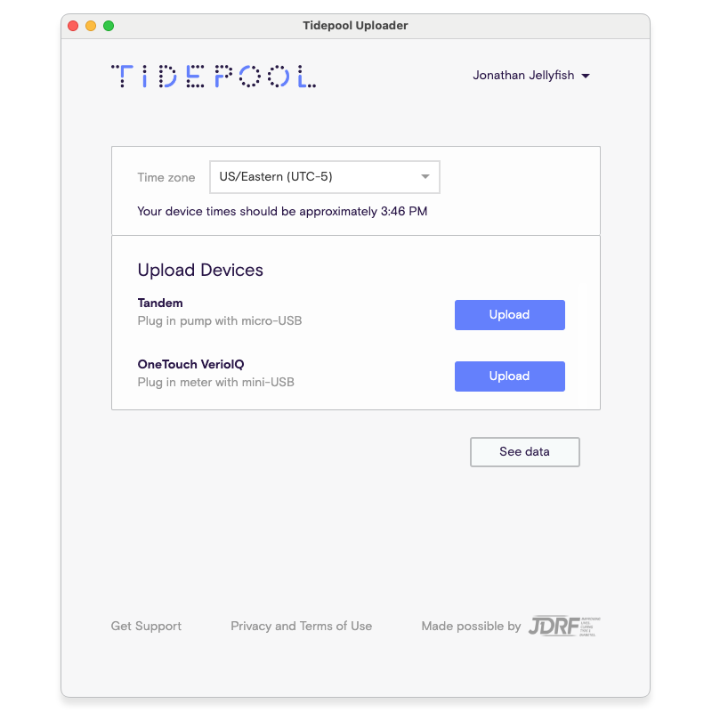
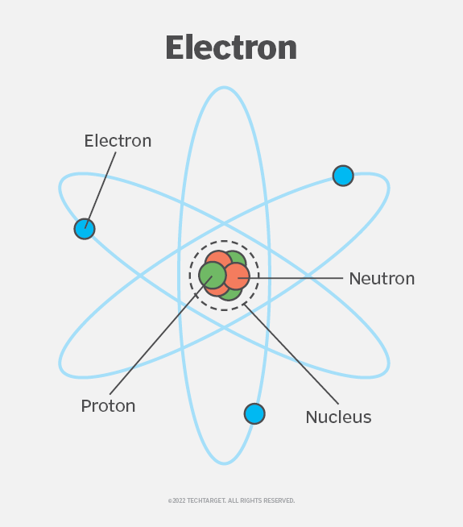
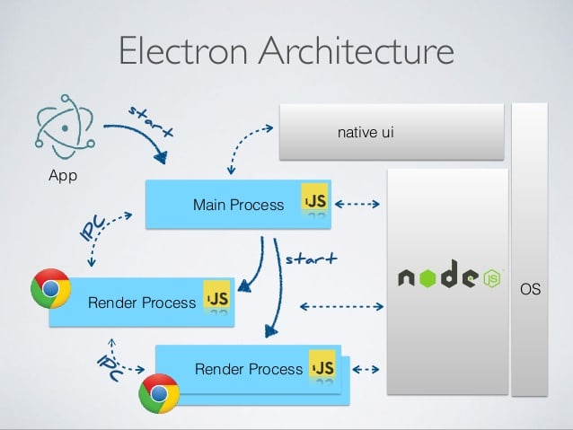
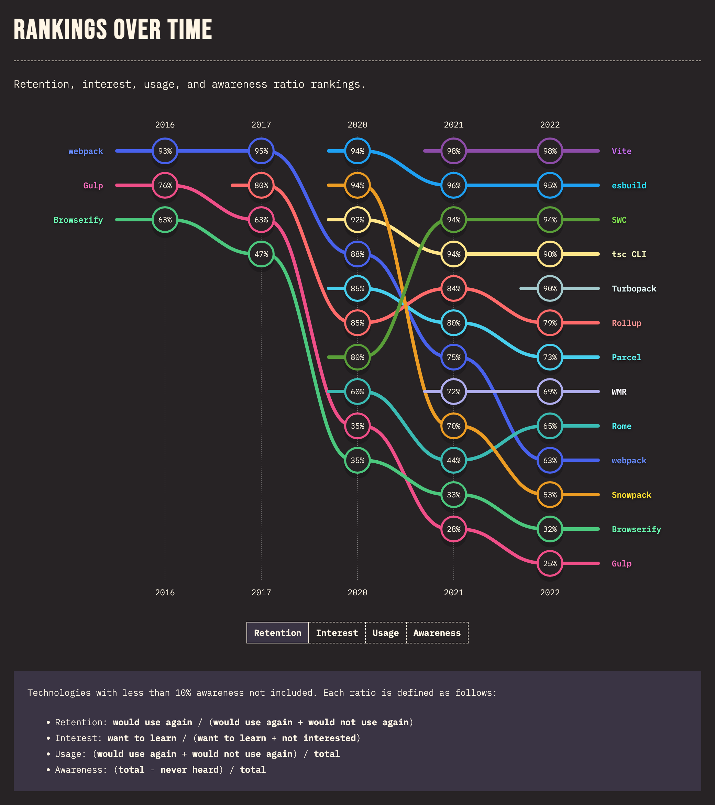
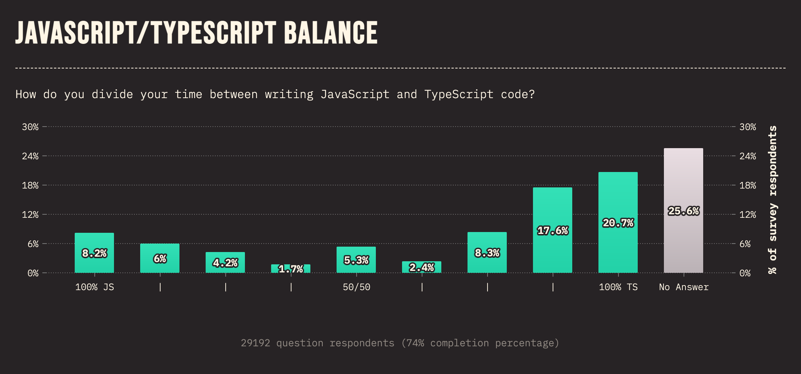

Electron Five Ws
Electron Version (Zip recommended)
Web Version
Who am I?
What is Electron?
When did Electron begin?
Where is Electron?
Why use Electron?
How do you use Electron?
Who am I?
Chris McGee
Software Engineer, mostly Frontend
@krystophv most places on the internet
Why am I telling you about Electron?
Where is Electron?
Electron apps are everywhere
Notable Electron Apps
- Atom
- Visual Studio Code*
- Figma
- Slack
- Discord
- Signal
- Postman
- Microsoft Teams
- Skype
- Notion*
- WordPress
- 1Password
- Obsidian
* used in the making of this presentation
Where did Electron come from?
The first Atom release February 26, 2014
Built around a framework called Atom Shell
Atom Shell was always intended to be a cross-platform framework
Atom Shell renamed to Electron April 23, 2015
What is Electron?
What is Electron?
An electron is an elementary subatomic particle with a charge of negative one.
https://www.techtarget.com/whatis/definition/electron
What is Electron?
Electron is a framework for building desktop applications using JavaScript, HTML, and CSS. - electron.org
What is Electron?
https://www.wildnettechnologies.com/build-cross-platform-desktop-apps-with-electron/
Why use Electron?
Reasons to use Electron
Web technologies: Electron leverages web technologies, making it easy for web teams to build desktop applications using their existing skills.
Code reuse: Electron applications can reuse code from your web applications to build your desktop applications.
Rich ecosystem: NodeJS and Web JavaScript have vibrant and active communities, which means you can find a wide range of plugins, libraries, and resources available.
Native capabilities: Electron provides access to native APIs, allowing you to leverage the full power of the underlying operating system and integrate with system-level features.
Cross-platform compatibility: Electron allows you to build desktop applications that can run on Windows, macOS, and Linux without the need for platform-specific code.*
* generally
It's enough: Many desktop apps don't do a whole lot more than what a web app can do. (this is foreshadowing)
How easy is it to use Electron?
Electron Fiddle
Electron Fiddle is an Electron development environment that allows you to quickly prototype and experiment with Electron applications.
Electron Fiddle
Electron Forge
Electron Forge is a complete toolchain for creating, packaging, and publishing Electron applications.
It provides a set of command-line tools and a powerful API to streamline the development process.
With Electron Forge, you can easily scaffold a new Electron project, manage dependencies, and build distributable packages for different platforms.
Install Vite-Typescript Template
Prerequisites: node, yarn
Bootstrap your application:
> npm init electron-app@latest my-electron-app \
-- --template=vite-typescripthttps://www.electronforge.io/#using-templates
Why Vite and Typescript?
https://2022.stateofjs.com/en-US/libraries/build-tools/
Why Vite and Typescript?
https://2022.stateofjs.com/en-US/usage/#js_ts_balance
Launch the Development App
Navigate to the project directory and run the following command:
> cd my-electron-app
> yarn startThis will launch the Electron application in development mode.
You can now make changes to the code and see them reflected in the application.
Add Reveal.js to the Demo Application
- Add Reveal.js:
yarn add reveal.jsdiff --git a/package.json b/package.json
index 392543b..bb9898c 100644
--- a/package.json
+++ b/package.json
@@ -31,6 +31,7 @@
"typescript": "~4.5.4"
},
"dependencies": {
- "electron-squirrel-startup": "^1.0.0"
+ "electron-squirrel-startup": "^1.0.0",
+ "reveal.js": "^5.0.4"
}
}
Add Reveal.js to the Demo Application
- Update
src/renderer.ts
diff --git a/src/renderer.ts b/src/renderer.ts
index d75993c..0b5f498 100644
--- a/src/renderer.ts
+++ b/src/renderer.ts
@@ -26,6 +26,13 @@
* ```
*/
-import './index.css';
+import 'reveal.js/dist/reveal.css';
+import 'reveal.js/dist/theme/black.css';
-console.log('👋 This message is being logged by "renderer.ts", included via Vite');
+import Reveal from 'reveal.js';
+
+const deck = new Reveal({
+ plugins: [ ]
+})
+deck.initialize();
Add Reveal.js to the Demo Application
- Update
index.html